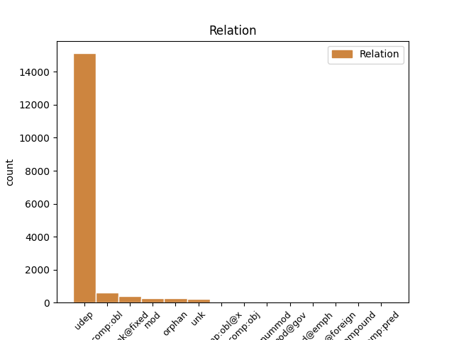
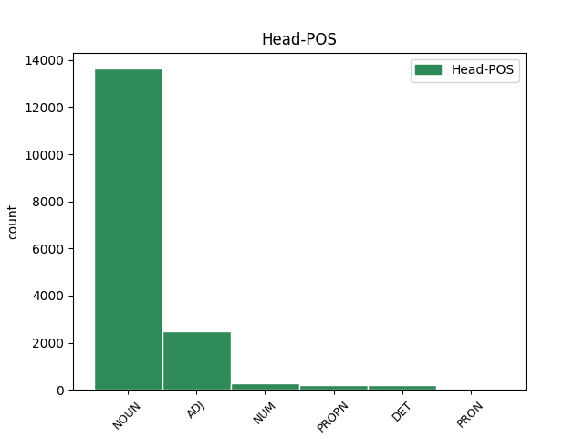
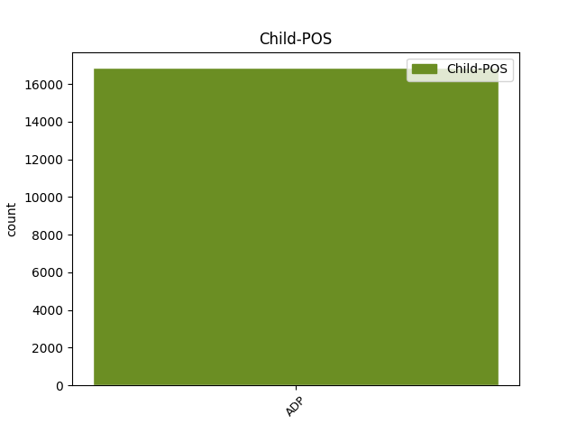

Distribution of features within this leaf



Agreement Rules sorted by frequency.
- When the dependent token is the underspecified dependency(udep) of the head token, and the head token is NOUN and the dependent token is ADP.
1 O _ _ _ _ 0 _ _ _
2 využití využití NOUN NNNS6-----A---- Case=Loc|Gender=Neut|Number=Sing|Polarity=Pos 0 _ _ _
3 paprsků _ _ _ _ 0 _ _ _
4 v v ADP RR--6---------- AdpType=Prep|Case=Loc 2 udep _ LId=v-1
5 lékařství _ _ _ _ 0 _ _ _
6 je _ _ _ _ 0 _ _ _
7 pojednáno _ _ _ _ 0 _ _ _
8 v _ _ _ _ 0 _ _ _
9 * _ _ _ _ 0 _ _ _
10 a _ _ _ _ 0 _ _ _
11 dalších _ _ _ _ 0 _ _ _
12 . _ _ _ _ 0 _ _ _
1 Všechny _ _ _ _ 0 _ _ _
2 tyto _ _ _ _ 0 _ _ _
3 skutečnosti _ _ _ _ 0 _ _ _
4 se _ _ _ _ 0 _ _ _
5 dají _ _ _ _ 0 _ _ _
6 z _ _ _ _ 0 _ _ _
7 představy _ _ _ _ 0 _ _ _
8 jaderného _ _ _ _ 0 _ _ _
9 modelu _ _ _ _ 0 _ _ _
10 atomu _ _ _ _ 0 _ _ _
11 nazývaného nazývaný ADJ AAIS2----1A---- Animacy=Inan|Case=Gen|Degree=Pos|Gender=Masc|Number=Sing|Polarity=Pos 0 _ _ _
12 podle podle ADP RR--2---------- AdpType=Prep|Case=Gen 11 udep _ LId=podle-2
13 objevitele _ _ _ _ 0 _ _ _
14 model _ _ _ _ 0 _ _ _
15 Rutherfordův _ _ _ _ 0 _ _ _
16 . _ _ _ _ 0 _ _ _
1 Správnost _ _ _ _ 0 _ _ _
2 výrazu _ _ _ _ 0 _ _ _
3 pro _ _ _ _ 0 _ _ _
4 * _ _ _ _ 0 _ _ _
5 , _ _ _ _ 0 _ _ _
6 odvozeného odvozený ADJ AAIS2----1A---- Animacy=Inan|Case=Gen|Degree=Pos|Gender=Masc|Number=Sing|Polarity=Pos 0 _ _ _
7 Dixonem _ _ _ _ 0 _ _ _
8 a _ _ _ _ 0 _ _ _
9 Moodem _ _ _ _ 0 _ _ _
10 z z ADP RR--2---------- AdpType=Prep|Case=Gen 6 comp:obl _ LId=z-1
11 obecné _ _ _ _ 0 _ _ _
12 definice _ _ _ _ 0 _ _ _
13 a _ _ _ _ 0 _ _ _
14 obou _ _ _ _ 0 _ _ _
15 korekcí _ _ _ _ 0 _ _ _
16 , _ _ _ _ 0 _ _ _
17 a _ _ _ _ 0 _ _ _
18 * _ _ _ _ 0 _ _ _
19 se _ _ _ _ 0 _ _ _
20 ověřovala _ _ _ _ 0 _ _ _
21 na _ _ _ _ 0 _ _ _
22 směrodatných _ _ _ _ 0 _ _ _
23 odchylkách _ _ _ _ 0 _ _ _
24 získaných _ _ _ _ 0 _ _ _
25 z _ _ _ _ 0 _ _ _
26 měření _ _ _ _ 0 _ _ _
27 na _ _ _ _ 0 _ _ _
28 jiskřišti _ _ _ _ 0 _ _ _
29 , _ _ _ _ 0 _ _ _
30 tyč _ _ _ _ 0 _ _ _
31 , _ _ _ _ 0 _ _ _
32 deska _ _ _ _ 0 _ _ _
33 s _ _ _ _ 0 _ _ _
34 doskokem _ _ _ _ 0 _ _ _
35 , _ _ _ _ 0 _ _ _
36 při _ _ _ _ 0 _ _ _
37 kladné _ _ _ _ 0 _ _ _
38 spínací _ _ _ _ 0 _ _ _
39 vlně _ _ _ _ 0 _ _ _
40 . _ _ _ _ 0 _ _ _
1 Střední _ _ _ _ 0 _ _ _
2 hodnoty _ _ _ _ 0 _ _ _
3 získané _ _ _ _ 0 _ _ _
4 korigovaným _ _ _ _ 0 _ _ _
5 vztahem _ _ _ _ 0 _ _ _
6 z _ _ _ _ 0 _ _ _
7 měření _ _ _ _ 0 _ _ _
8 při _ _ _ _ 0 _ _ _
9 různých _ _ _ _ 0 _ _ _
10 intervalech _ _ _ _ 0 _ _ _
11 napětí _ _ _ _ 0 _ _ _
12 a _ _ _ _ 0 _ _ _
13 směrodatné _ _ _ _ 0 _ _ _
14 odchylky _ _ _ _ 0 _ _ _
15 hodnot _ _ _ _ 0 _ _ _
16 jsou _ _ _ _ 0 _ _ _
17 v _ _ _ _ 0 _ _ _
18 závislosti _ _ _ _ 0 _ _ _
19 na _ _ _ _ 0 _ _ _
20 * _ _ _ _ 0 _ _ _
21 v _ _ _ _ 0 _ _ _
22 * _ _ _ _ 0 _ _ _
23 , _ _ _ _ 0 _ _ _
24 v _ _ _ _ 0 _ _ _
25 závislosti závislost NOUN NNFS6-----A---- Case=Loc|Gender=Fem|Number=Sing|Polarity=Pos 0 _ _ _
26 na _ _ _ _ 0 _ _ _
27 * _ _ _ _ 0 _ _ _
28 při při ADP RR--6---------- AdpType=Prep|Case=Loc 25 orphan _ LId=při-1
29 různém _ _ _ _ 0 _ _ _
30 * _ _ _ _ 0 _ _ _
31 , _ _ _ _ 0 _ _ _
32 od _ _ _ _ 0 _ _ _
33 # _ _ _ _ 0 _ _ _
34 do _ _ _ _ 0 _ _ _
35 # _ _ _ _ 0 _ _ _
36 * _ _ _ _ 0 _ _ _
37 jsou _ _ _ _ 0 _ _ _
38 v _ _ _ _ 0 _ _ _
39 * _ _ _ _ 0 _ _ _
40 . _ _ _ _ 0 _ _ _
1 Ve _ _ _ _ 0 _ _ _
2 studiu _ _ _ _ 0 _ _ _
3 elementárních _ _ _ _ 0 _ _ _
4 částic _ _ _ _ 0 _ _ _
5 je _ _ _ _ 0 _ _ _
6 jedním _ _ _ _ 0 _ _ _
7 z _ _ _ _ 0 _ _ _
8 velkých _ _ _ _ 0 _ _ _
9 úspěchů _ _ _ _ 0 _ _ _
10 přijetí _ _ _ _ 0 _ _ _
11 projektu _ _ _ _ 0 _ _ _
12 na _ _ _ _ 0 _ _ _
13 pokus _ _ _ _ 0 _ _ _
14 v _ _ _ _ 0 _ _ _
15 oblasti _ _ _ _ 0 _ _ _
16 antiprotonových _ _ _ _ 0 _ _ _
17 reakcí _ _ _ _ 0 _ _ _
18 , _ _ _ _ 0 _ _ _
19 jehož _ _ _ _ 0 _ _ _
20 realizace _ _ _ _ 0 _ _ _
21 je _ _ _ _ 0 _ _ _
22 na _ _ _ _ 0 _ _ _
23 základě _ _ _ _ 0 _ _ _
24 rozhodnutí _ _ _ _ 0 _ _ _
25 vědecké _ _ _ _ 0 _ _ _
26 rady _ _ _ _ 0 _ _ _
27 SÚJV _ _ _ _ 0 _ _ _
28 připravována _ _ _ _ 0 _ _ _
29 na _ _ _ _ 0 _ _ _
30 obřím _ _ _ _ 0 _ _ _
31 urychlovači _ _ _ _ 0 _ _ _
32 v _ _ _ _ 0 _ _ _
33 Serpuchově Serpuchovo PROPN NNNS6-----A---- Case=Loc|Gender=Neut|NameType=Geo|Number=Sing|Polarity=Pos 0 _ _ _
34 v v ADP RR--6---------- AdpType=Prep|Case=Loc 33 udep _ LId=v-1
35 SSSR _ _ _ _ 0 _ _ _
36 . _ _ _ _ 0 _ _ _
1 U _ _ _ _ 0 _ _ _
2 přírodních _ _ _ _ 0 _ _ _
3 jader _ _ _ _ 0 _ _ _
4 nabývá _ _ _ _ 0 _ _ _
5 hodnoty hodnota NOUN NNFS2-----A---- Case=Gen|Gender=Fem|Number=Sing|Polarity=Pos 0 _ _ _
6 od _ _ _ _ 0 _ _ _
7 nuly _ _ _ _ 0 _ _ _
8 do do ADP RR--2---------- AdpType=Prep|Case=Gen 5 mod _ LId=do-1
9 # _ _ _ _ 0 _ _ _
10 , _ _ _ _ 0 _ _ _
11 neboť _ _ _ _ 0 _ _ _
12 pro _ _ _ _ 0 _ _ _
13 uran _ _ _ _ 0 _ _ _
14 je _ _ _ _ 0 _ _ _
15 # _ _ _ _ 0 _ _ _
16 . _ _ _ _ 0 _ _ _
1 Závěrem _ _ _ _ 0 _ _ _
2 této _ _ _ _ 0 _ _ _
3 kapitoly _ _ _ _ 0 _ _ _
4 je _ _ _ _ 0 _ _ _
5 třeba _ _ _ _ 0 _ _ _
6 znovu _ _ _ _ 0 _ _ _
7 zdůraznit _ _ _ _ 0 _ _ _
8 , _ _ _ _ 0 _ _ _
9 že _ _ _ _ 0 _ _ _
10 poskytnutí _ _ _ _ 0 _ _ _
11 pomoci _ _ _ _ 0 _ _ _
12 je _ _ _ _ 0 _ _ _
13 morální _ _ _ _ 0 _ _ _
14 povinností _ _ _ _ 0 _ _ _
15 každého každý DET AAMS2----1A---- Animacy=Anim|Case=Gen|Degree=Pos|Gender=Masc|Number=Sing|Polarity=Pos|PronType=Tot 0 _ _ _
16 z z ADP RR--2---------- AdpType=Prep|Case=Gen 15 udep _ LId=z-1
17 nás _ _ _ _ 0 _ _ _
18 , _ _ _ _ 0 _ _ _
19 a _ _ _ _ 0 _ _ _
20 myslím _ _ _ _ 0 _ _ _
21 , _ _ _ _ 0 _ _ _
22 že _ _ _ _ 0 _ _ _
23 by _ _ _ _ 0 _ _ _
24 se _ _ _ _ 0 _ _ _
25 nenašel _ _ _ _ 0 _ _ _
26 jedinec _ _ _ _ 0 _ _ _
27 , _ _ _ _ 0 _ _ _
28 který _ _ _ _ 0 _ _ _
29 by _ _ _ _ 0 _ _ _
30 se _ _ _ _ 0 _ _ _
31 chtěl _ _ _ _ 0 _ _ _
32 této _ _ _ _ 0 _ _ _
33 povinnosti _ _ _ _ 0 _ _ _
34 vyhnout _ _ _ _ 0 _ _ _
35 . _ _ _ _ 0 _ _ _
1 Atomová _ _ _ _ 0 _ _ _
2 hmota _ _ _ _ 0 _ _ _
3 jednoho jeden NUM ClZS2---------- Case=Gen|Gender=Masc,Neut|Number=Sing|NumForm=Word|NumType=Card|NumValue=1,2,3 0 _ _ _
4 ze z ADP RV--2---------- AdpType=Voc|Case=Gen 3 udep _ LId=z-1
5 dvou _ _ _ _ 0 _ _ _
6 stabilních _ _ _ _ 0 _ _ _
7 izotopů _ _ _ _ 0 _ _ _
8 dusíku _ _ _ _ 0 _ _ _
9 je _ _ _ _ 0 _ _ _
10 jeho _ _ _ _ 0 _ _ _
11 hmotové _ _ _ _ 0 _ _ _
12 číslo _ _ _ _ 0 _ _ _
13 . _ _ _ _ 0 _ _ _
1 Její _ _ _ _ 0 _ _ _
2 plody _ _ _ _ 0 _ _ _
3 nejsou _ _ _ _ 0 _ _ _
4 využívány _ _ _ _ 0 _ _ _
5 k _ _ _ _ 0 _ _ _
6 vykořisťování _ _ _ _ 0 _ _ _
7 lidí _ _ _ _ 0 _ _ _
8 , _ _ _ _ 0 _ _ _
9 k _ _ _ _ 0 _ _ _
10 imperialistickému _ _ _ _ 0 _ _ _
11 olupování _ _ _ _ 0 _ _ _
12 národů _ _ _ _ 0 _ _ _
13 a _ _ _ _ 0 _ _ _
14 k _ _ _ _ 0 _ _ _
15 vedení _ _ _ _ 0 _ _ _
16 válek _ _ _ _ 0 _ _ _
17 a _ _ _ _ 0 _ _ _
18 ničení _ _ _ _ 0 _ _ _
19 civilizací _ _ _ _ 0 _ _ _
20 jako _ _ _ _ 0 _ _ _
21 v _ _ _ _ 0 _ _ _
22 kapitalismu _ _ _ _ 0 _ _ _
23 , _ _ _ _ 0 _ _ _
24 ale _ _ _ _ 0 _ _ _
25 důsledně _ _ _ _ 0 _ _ _
26 k _ _ _ _ 0 _ _ _
27 vzestupu vzestup NOUN NNIS3-----A---- Animacy=Inan|Case=Dat|Gender=Masc|Number=Sing|Polarity=Pos 0 _ _ _
28 blahobytu _ _ _ _ 0 _ _ _
29 lidí _ _ _ _ 0 _ _ _
30 , _ _ _ _ 0 _ _ _
31 k _ _ _ _ 0 _ _ _
32 jejich _ _ _ _ 0 _ _ _
33 stále _ _ _ _ 0 _ _ _
34 plnějšímu _ _ _ _ 0 _ _ _
35 uspokojování _ _ _ _ 0 _ _ _
36 materiálních _ _ _ _ 0 _ _ _
37 i _ _ _ _ 0 _ _ _
38 kulturních _ _ _ _ 0 _ _ _
39 potřeb _ _ _ _ 0 _ _ _
40 , _ _ _ _ 0 _ _ _
41 k k ADP RR--3---------- AdpType=Prep|Case=Dat 27 unk _ LId=k-1
42 mírovému _ _ _ _ 0 _ _ _
43 budování _ _ _ _ 0 _ _ _
44 a _ _ _ _ 0 _ _ _
45 naplnění _ _ _ _ 0 _ _ _
46 cílů _ _ _ _ 0 _ _ _
47 ušlechtilé _ _ _ _ 0 _ _ _
48 socialistické _ _ _ _ 0 _ _ _
49 výstavby _ _ _ _ 0 _ _ _
50 . _ _ _ _ 0 _ _ _
1 Střední _ _ _ _ 0 _ _ _
2 hodnoty _ _ _ _ 0 _ _ _
3 získané _ _ _ _ 0 _ _ _
4 korigovaným _ _ _ _ 0 _ _ _
5 vztahem _ _ _ _ 0 _ _ _
6 z _ _ _ _ 0 _ _ _
7 měření _ _ _ _ 0 _ _ _
8 při _ _ _ _ 0 _ _ _
9 různých _ _ _ _ 0 _ _ _
10 intervalech _ _ _ _ 0 _ _ _
11 napětí _ _ _ _ 0 _ _ _
12 a _ _ _ _ 0 _ _ _
13 směrodatné _ _ _ _ 0 _ _ _
14 odchylky _ _ _ _ 0 _ _ _
15 hodnot _ _ _ _ 0 _ _ _
16 jsou _ _ _ _ 0 _ _ _
17 v _ _ _ _ 0 _ _ _
18 závislosti závislost NOUN NNFS6-----A---- Case=Loc|Gender=Fem|Number=Sing|Polarity=Pos 0 _ _ _
19 na na ADP RR--6---------- AdpType=Prep|Case=Loc 18 unk@fixed _ LId=na-1
20 * _ _ _ _ 0 _ _ _
21 v _ _ _ _ 0 _ _ _
22 * _ _ _ _ 0 _ _ _
23 , _ _ _ _ 0 _ _ _
24 v _ _ _ _ 0 _ _ _
25 závislosti _ _ _ _ 0 _ _ _
26 na _ _ _ _ 0 _ _ _
27 * _ _ _ _ 0 _ _ _
28 při _ _ _ _ 0 _ _ _
29 různém _ _ _ _ 0 _ _ _
30 * _ _ _ _ 0 _ _ _
31 , _ _ _ _ 0 _ _ _
32 od _ _ _ _ 0 _ _ _
33 # _ _ _ _ 0 _ _ _
34 do _ _ _ _ 0 _ _ _
35 # _ _ _ _ 0 _ _ _
36 * _ _ _ _ 0 _ _ _
37 jsou _ _ _ _ 0 _ _ _
38 v _ _ _ _ 0 _ _ _
39 * _ _ _ _ 0 _ _ _
40 . _ _ _ _ 0 _ _ _
1 Studium _ _ _ _ 0 _ _ _
2 pohybu _ _ _ _ 0 _ _ _
3 těles _ _ _ _ 0 _ _ _
4 sluneční _ _ _ _ 0 _ _ _
5 soustavy _ _ _ _ 0 _ _ _
6 včetně _ _ _ _ 0 _ _ _
7 jejího _ _ _ _ 0 _ _ _
8 pohybu _ _ _ _ 0 _ _ _
9 v _ _ _ _ 0 _ _ _
10 prostoru _ _ _ _ 0 _ _ _
11 , _ _ _ _ 0 _ _ _
12 analýza _ _ _ _ 0 _ _ _
13 změn _ _ _ _ 0 _ _ _
14 v _ _ _ _ 0 _ _ _
15 pozicích _ _ _ _ 0 _ _ _
16 hvězd _ _ _ _ 0 _ _ _
17 vztažených _ _ _ _ 0 _ _ _
18 k k ADP RR--3---------- AdpType=Prep|Case=Dat 25 comp:obl _ LId=k-1
19 různým _ _ _ _ 0 _ _ _
20 epochám _ _ _ _ 0 _ _ _
21 a _ _ _ _ 0 _ _ _
22 katalogům _ _ _ _ 0 _ _ _
23 nebo _ _ _ _ 0 _ _ _
24 k _ _ _ _ 0 _ _ _
25 systému systém NOUN NNIS3-----A---- Animacy=Inan|Case=Dat|Gender=Masc|Number=Sing|Polarity=Pos 0 _ _ _
26 navázanému _ _ _ _ 0 _ _ _
27 na _ _ _ _ 0 _ _ _
28 vzdálené _ _ _ _ 0 _ _ _
29 galaxie _ _ _ _ 0 _ _ _
30 . _ _ _ _ 0 _ _ _
1 Na _ _ _ _ 0 _ _ _
2 Žižkově _ _ _ _ 0 _ _ _
3 stoupá _ _ _ _ 0 _ _ _
4 počet _ _ _ _ 0 _ _ _
5 zde _ _ _ _ 0 _ _ _
6 bydlících _ _ _ _ 0 _ _ _
7 osob _ _ _ _ 0 _ _ _
8 průměrně _ _ _ _ 0 _ _ _
9 každých _ _ _ _ 0 _ _ _
10 # _ _ _ _ 0 _ _ _
11 let _ _ _ _ 0 _ _ _
12 o _ _ _ _ 0 _ _ _
13 # _ _ _ _ 0 _ _ _
14 tisíc _ _ _ _ 0 _ _ _
15 , _ _ _ _ 0 _ _ _
16 s _ _ _ _ 0 _ _ _
17 největším _ _ _ _ 0 _ _ _
18 přírůstkem _ _ _ _ 0 _ _ _
19 v _ _ _ _ 0 _ _ _
20 letech _ _ _ _ 0 _ _ _
21 # _ _ _ _ 0 _ _ _
22 až _ _ _ _ 0 _ _ _
23 # _ _ _ _ 0 _ _ _
24 , _ _ _ _ 0 _ _ _
25 v _ _ _ _ 0 _ _ _
26 Holešovicích _ _ _ _ 0 _ _ _
27 , _ _ _ _ 0 _ _ _
28 Bubnech _ _ _ _ 0 _ _ _
29 a _ _ _ _ 0 _ _ _
30 i _ _ _ _ 0 _ _ _
31 Libni Libeň PROPN NNFS6-----A---- Case=Loc|Gender=Fem|NameType=Geo|Number=Sing|Polarity=Pos 0 _ _ _
32 přibližně _ _ _ _ 0 _ _ _
33 o _ _ _ _ 0 _ _ _
34 # _ _ _ _ 0 _ _ _
35 tisíc _ _ _ _ 0 _ _ _
36 , _ _ _ _ 0 _ _ _
37 nejvíce _ _ _ _ 0 _ _ _
38 v v ADP RR--6---------- AdpType=Prep|Case=Loc 31 orphan _ LId=v-1
39 letech _ _ _ _ 0 _ _ _
40 # _ _ _ _ 0 _ _ _
41 až _ _ _ _ 0 _ _ _
42 # _ _ _ _ 0 _ _ _
43 . _ _ _ _ 0 _ _ _
1 Tímtéž _ _ _ _ 0 _ _ _
2 programem _ _ _ _ 0 _ _ _
3 byly _ _ _ _ 0 _ _ _
4 zjištěny _ _ _ _ 0 _ _ _
5 hodnoty _ _ _ _ 0 _ _ _
6 vypočtené _ _ _ _ 0 _ _ _
7 z _ _ _ _ 0 _ _ _
8 lichých _ _ _ _ 0 _ _ _
9 harmonických _ _ _ _ 0 _ _ _
10 od _ _ _ _ 0 _ _ _
11 první _ _ _ _ 0 _ _ _
12 do _ _ _ _ 0 _ _ _
13 # _ _ _ _ 0 _ _ _
14 a _ _ _ _ 0 _ _ _
15 vztažené _ _ _ _ 0 _ _ _
16 na _ _ _ _ 0 _ _ _
17 vypočtený _ _ _ _ 0 _ _ _
18 z _ _ _ _ 0 _ _ _
19 lichých _ _ _ _ 0 _ _ _
20 harmonických harmonický ADJ AAFP2----1A---- Case=Gen|Degree=Pos|Gender=Fem|Number=Plur|Polarity=Pos 0 _ _ _
21 až _ _ _ _ 0 _ _ _
22 do do ADP RR--2---------- AdpType=Prep|Case=Gen 20 mod _ LId=do-1
23 # _ _ _ _ 0 _ _ _
24 , _ _ _ _ 0 _ _ _
25 příspěvek _ _ _ _ 0 _ _ _
26 ostatních _ _ _ _ 0 _ _ _
27 harmonických _ _ _ _ 0 _ _ _
28 lze _ _ _ _ 0 _ _ _
29 již _ _ _ _ 0 _ _ _
30 zanedbat _ _ _ _ 0 _ _ _
31 . _ _ _ _ 0 _ _ _
1 Tímtéž _ _ _ _ 0 _ _ _
2 programem _ _ _ _ 0 _ _ _
3 byly _ _ _ _ 0 _ _ _
4 zjištěny _ _ _ _ 0 _ _ _
5 hodnoty _ _ _ _ 0 _ _ _
6 vypočtené _ _ _ _ 0 _ _ _
7 z _ _ _ _ 0 _ _ _
8 lichých _ _ _ _ 0 _ _ _
9 harmonických harmonický ADJ AAFP2----1A---- Case=Gen|Degree=Pos|Gender=Fem|Number=Plur|Polarity=Pos 0 _ _ _
10 od _ _ _ _ 0 _ _ _
11 první _ _ _ _ 0 _ _ _
12 do do ADP RR--2---------- AdpType=Prep|Case=Gen 9 unk _ LId=do-1
13 # _ _ _ _ 0 _ _ _
14 a _ _ _ _ 0 _ _ _
15 vztažené _ _ _ _ 0 _ _ _
16 na _ _ _ _ 0 _ _ _
17 vypočtený _ _ _ _ 0 _ _ _
18 z _ _ _ _ 0 _ _ _
19 lichých _ _ _ _ 0 _ _ _
20 harmonických _ _ _ _ 0 _ _ _
21 až _ _ _ _ 0 _ _ _
22 do _ _ _ _ 0 _ _ _
23 # _ _ _ _ 0 _ _ _
24 , _ _ _ _ 0 _ _ _
25 příspěvek _ _ _ _ 0 _ _ _
26 ostatních _ _ _ _ 0 _ _ _
27 harmonických _ _ _ _ 0 _ _ _
28 lze _ _ _ _ 0 _ _ _
29 již _ _ _ _ 0 _ _ _
30 zanedbat _ _ _ _ 0 _ _ _
31 . _ _ _ _ 0 _ _ _
1 Potom _ _ _ _ 0 _ _ _
2 měl _ _ _ _ 0 _ _ _
3 ještě _ _ _ _ 0 _ _ _
4 něco něco PRON PZ--4---------- Case=Acc|PronType=Ind 0 _ _ _
5 na na ADP RR--4---------- AdpType=Prep|Case=Acc 4 udep _ LId=na-1
6 práci _ _ _ _ 0 _ _ _
7 , _ _ _ _ 0 _ _ _
8 a _ _ _ _ 0 _ _ _
9 tak _ _ _ _ 0 _ _ _
10 startující _ _ _ _ 0 _ _ _
11 tanky _ _ _ _ 0 _ _ _
12 ztratil _ _ _ _ 0 _ _ _
13 z _ _ _ _ 0 _ _ _
14 dohledu _ _ _ _ 0 _ _ _
15 . _ _ _ _ 0 _ _ _
1 Pro _ _ _ _ 0 _ _ _
2 jednoduchý _ _ _ _ 0 _ _ _
3 nátěr _ _ _ _ 0 _ _ _
4 zastudena _ _ _ _ 0 _ _ _
5 na _ _ _ _ 0 _ _ _
6 hrubém _ _ _ _ 0 _ _ _
7 vodorovném _ _ _ _ 0 _ _ _
8 podkladu _ _ _ _ 0 _ _ _
9 se _ _ _ _ 0 _ _ _
10 počítá _ _ _ _ 0 _ _ _
11 # _ _ _ _ 0 _ _ _
12 * _ _ _ _ 0 _ _ _
13 , _ _ _ _ 0 _ _ _
14 na _ _ _ _ 0 _ _ _
15 svislém svislý ADJ AAIS6----1A---- Animacy=Inan|Case=Loc|Degree=Pos|Gender=Masc|Number=Sing|Polarity=Pos 0 _ _ _
16 # _ _ _ _ 0 _ _ _
17 * _ _ _ _ 0 _ _ _
18 , _ _ _ _ 0 _ _ _
19 na na ADP RR--6---------- AdpType=Prep|Case=Loc 15 orphan _ LId=na-1
20 hladkém _ _ _ _ 0 _ _ _
21 # _ _ _ _ 0 _ _ _
22 a _ _ _ _ 0 _ _ _
23 # _ _ _ _ 0 _ _ _
24 * _ _ _ _ 0 _ _ _
25 . _ _ _ _ 0 _ _ _
1 V _ _ _ _ 0 _ _ _
2 případech _ _ _ _ 0 _ _ _
3 , _ _ _ _ 0 _ _ _
4 kde _ _ _ _ 0 _ _ _
5 není _ _ _ _ 0 _ _ _
6 možné _ _ _ _ 0 _ _ _
7 dodržeti _ _ _ _ 0 _ _ _
8 tuto _ _ _ _ 0 _ _ _
9 vzdálenost _ _ _ _ 0 _ _ _
10 s s ADP RR--7---------- AdpType=Prep|Case=Ins 11 comp:obj _ LId=s-1
11 ohledem ohled NOUN NNIS7-----A---- Animacy=Inan|Case=Ins|Gender=Masc|Number=Sing|Polarity=Pos 0 _ _ _
12 na _ _ _ _ 0 _ _ _
13 velikost _ _ _ _ 0 _ _ _
14 dílny _ _ _ _ 0 _ _ _
15 , _ _ _ _ 0 _ _ _
16 musí _ _ _ _ 0 _ _ _
17 býti _ _ _ _ 0 _ _ _
18 mezi _ _ _ _ 0 _ _ _
19 topidlem _ _ _ _ 0 _ _ _
20 a _ _ _ _ 0 _ _ _
21 soupravou _ _ _ _ 0 _ _ _
22 pro _ _ _ _ 0 _ _ _
23 svařování _ _ _ _ 0 _ _ _
24 vytvořena _ _ _ _ 0 _ _ _
25 tepelně _ _ _ _ 0 _ _ _
26 izolační _ _ _ _ 0 _ _ _
27 stěna _ _ _ _ 0 _ _ _
28 oddělující _ _ _ _ 0 _ _ _
29 sálání _ _ _ _ 0 _ _ _
30 tepla _ _ _ _ 0 _ _ _
31 . _ _ _ _ 0 _ _ _
1 Odměny _ _ _ _ 0 _ _ _
2 podle _ _ _ _ 0 _ _ _
3 bodu _ _ _ _ 0 _ _ _
4 * _ _ _ _ 0 _ _ _
5 a _ _ _ _ 0 _ _ _
6 se _ _ _ _ 0 _ _ _
7 vyplácejí _ _ _ _ 0 _ _ _
8 vždy _ _ _ _ 0 _ _ _
9 do do ADP RR--2---------- AdpType=Prep|Case=Gen 15 mod@gov _ LId=do-1
10 # _ _ _ _ 0 _ _ _
11 a _ _ _ _ 0 _ _ _
12 do _ _ _ _ 0 _ _ _
13 # _ _ _ _ 0 _ _ _
14 běžného _ _ _ _ 0 _ _ _
15 roku rok NOUN NNIS2-----A---- Animacy=Inan|Case=Gen|Gender=Masc|Number=Sing|Polarity=Pos 0 _ _ _
16 , _ _ _ _ 0 _ _ _
17 s _ _ _ _ 0 _ _ _
18 výjimkou _ _ _ _ 0 _ _ _
19 pracovníků _ _ _ _ 0 _ _ _
20 manuálních _ _ _ _ 0 _ _ _
21 , _ _ _ _ 0 _ _ _
22 kde _ _ _ _ 0 _ _ _
23 se _ _ _ _ 0 _ _ _
24 vyplácejí _ _ _ _ 0 _ _ _
25 měsíčně _ _ _ _ 0 _ _ _
26 . _ _ _ _ 0 _ _ _
1 Obracíme _ _ _ _ 0 _ _ _
2 se _ _ _ _ 0 _ _ _
3 proto _ _ _ _ 0 _ _ _
4 na _ _ _ _ 0 _ _ _
5 Vás ty PRON PP-P4--2------- Case=Acc|Number=Plur|Person=2|PronType=Prs 0 _ _ _
6 jako _ _ _ _ 0 _ _ _
7 na na ADP RR--4---------- AdpType=Prep|Case=Acc 5 comp:obl@x _ LId=na-1
8 odpovědného _ _ _ _ 0 _ _ _
9 řešitele _ _ _ _ 0 _ _ _
10 , _ _ _ _ 0 _ _ _
11 řešitelku _ _ _ _ 0 _ _ _
12 dílčího _ _ _ _ 0 _ _ _
13 úkolu _ _ _ _ 0 _ _ _
14 , _ _ _ _ 0 _ _ _
15 aby _ _ _ _ 0 _ _ _
16 byste _ _ _ _ 0 _ _ _
17 za _ _ _ _ 0 _ _ _
18 eventuální _ _ _ _ 0 _ _ _
19 spolupráce _ _ _ _ 0 _ _ _
20 s _ _ _ _ 0 _ _ _
21 vedoucím _ _ _ _ 0 _ _ _
22 Vašeho _ _ _ _ 0 _ _ _
23 oddělení _ _ _ _ 0 _ _ _
24 za _ _ _ _ 0 _ _ _
25 uvedený _ _ _ _ 0 _ _ _
26 úkol _ _ _ _ 0 _ _ _
27 vypracoval _ _ _ _ 0 _ _ _
28 , _ _ _ _ 0 _ _ _
29 vypracovala _ _ _ _ 0 _ _ _
30 stručnou _ _ _ _ 0 _ _ _
31 podkladovou _ _ _ _ 0 _ _ _
32 zprávu _ _ _ _ 0 _ _ _
33 o _ _ _ _ 0 _ _ _
34 dosažených _ _ _ _ 0 _ _ _
35 výsledcích _ _ _ _ 0 _ _ _
36 . _ _ _ _ 0 _ _ _
1 O _ _ _ _ 0 _ _ _
2 jedlé _ _ _ _ 0 _ _ _
3 mochomůrce mochomůrka NOUN NNFS6-----A---- Case=Loc|Gender=Fem|Number=Sing|Polarity=Pos 0 _ _ _
4 šiškovité _ _ _ _ 0 _ _ _
5 v v ADP RR--6---------- AdpType=Prep|Case=Loc 3 comp:obl@x _ LId=v-1
6 Čelákovicích _ _ _ _ 0 _ _ _
7 je _ _ _ _ 0 _ _ _
8 zpráva _ _ _ _ 0 _ _ _
9 na _ _ _ _ 0 _ _ _
10 * _ _ _ _ 0 _ _ _
11 # _ _ _ _ 0 _ _ _
12 . _ _ _ _ 0 _ _ _
1 Jednou jeden NUM ClFS7---------- Case=Ins|Gender=Fem|Number=Sing|NumForm=Word|NumType=Card|NumValue=1,2,3 0 _ _ _
2 z _ _ _ _ 0 _ _ _
3 novinek _ _ _ _ 0 _ _ _
4 je _ _ _ _ 0 _ _ _
5 růžově _ _ _ _ 0 _ _ _
6 karmínová _ _ _ _ 0 _ _ _
7 s s ADP RR--7---------- AdpType=Prep|Case=Ins 1 unk _ LId=s-1
8 bílým _ _ _ _ 0 _ _ _
9 středem _ _ _ _ 0 _ _ _
10 . _ _ _ _ 0 _ _ _
1 V _ _ _ _ 0 _ _ _
2 praxi _ _ _ _ 0 _ _ _
3 mívá _ _ _ _ 0 _ _ _
4 často _ _ _ _ 0 _ _ _
5 drůbež _ _ _ _ 0 _ _ _
6 volnost _ _ _ _ 0 _ _ _
7 pohybu _ _ _ _ 0 _ _ _
8 od _ _ _ _ 0 _ _ _
9 září _ _ _ _ 0 _ _ _
10 do _ _ _ _ 0 _ _ _
11 dubna _ _ _ _ 0 _ _ _
12 , _ _ _ _ 0 _ _ _
13 tedy _ _ _ _ 0 _ _ _
14 v _ _ _ _ 0 _ _ _
15 nepříznivých _ _ _ _ 0 _ _ _
16 chladných _ _ _ _ 0 _ _ _
17 měsících _ _ _ _ 0 _ _ _
18 , _ _ _ _ 0 _ _ _
19 v v ADP RR--6---------- AdpType=Prep|Case=Loc 20 comp:pred _ LId=v-1
20 zahradách zahrada NOUN NNFP6-----A---- Case=Loc|Gender=Fem|Number=Plur|Polarity=Pos 0 _ _ _
21 , _ _ _ _ 0 _ _ _
22 kde _ _ _ _ 0 _ _ _
23 není _ _ _ _ 0 _ _ _
24 nic _ _ _ _ 0 _ _ _
25 vysázeno _ _ _ _ 0 _ _ _
26 a _ _ _ _ 0 _ _ _
27 zaseto _ _ _ _ 0 _ _ _
28 . _ _ _ _ 0 _ _ _
1 Kluci _ _ _ _ 0 _ _ _
2 z _ _ _ _ 0 _ _ _
3 třetí _ _ _ _ 0 _ _ _
4 až _ _ _ _ 0 _ _ _
5 deváté _ _ _ _ 0 _ _ _
6 třídy _ _ _ _ 0 _ _ _
7 postavili _ _ _ _ 0 _ _ _
8 tábor _ _ _ _ 0 _ _ _
9 , _ _ _ _ 0 _ _ _
10 dovedli _ _ _ _ 0 _ _ _
11 vodu _ _ _ _ 0 _ _ _
12 z _ _ _ _ 0 _ _ _
13 potoka _ _ _ _ 0 _ _ _
14 k _ _ _ _ 0 _ _ _
15 umývárně _ _ _ _ 0 _ _ _
16 , _ _ _ _ 0 _ _ _
17 opravili _ _ _ _ 0 _ _ _
18 přístěnek _ _ _ _ 0 _ _ _
19 sloužící sloužící ADJ AGIS4-----A---- Animacy=Inan|Aspect=Imp|Case=Acc|Gender=Masc|Number=Sing|Polarity=Pos|Tense=Pres|VerbForm=Part|Voice=Act 0 _ _ _
20 už _ _ _ _ 0 _ _ _
21 od _ _ _ _ 0 _ _ _
22 loňska _ _ _ _ 0 _ _ _
23 za za ADP RR--4---------- AdpType=Prep|Case=Acc 19 comp:obl@x _ LId=za-1
24 jídelnu _ _ _ _ 0 _ _ _
25 , _ _ _ _ 0 _ _ _
26 prostě _ _ _ _ 0 _ _ _
27 všechno _ _ _ _ 0 _ _ _
28 , _ _ _ _ 0 _ _ _
29 co _ _ _ _ 0 _ _ _
30 tu _ _ _ _ 0 _ _ _
31 teď _ _ _ _ 0 _ _ _
32 mají _ _ _ _ 0 _ _ _
33 . _ _ _ _ 0 _ _ _
1 Cílem _ _ _ _ 0 _ _ _
2 jejího _ _ _ _ 0 _ _ _
3 výzkumu _ _ _ _ 0 _ _ _
4 bylo _ _ _ _ 0 _ _ _
5 ověření _ _ _ _ 0 _ _ _
6 stáří _ _ _ _ 0 _ _ _
7 , _ _ _ _ 0 _ _ _
8 založení _ _ _ _ 0 _ _ _
9 a _ _ _ _ 0 _ _ _
10 osídlení _ _ _ _ 0 _ _ _
11 jednak _ _ _ _ 0 _ _ _
12 v _ _ _ _ 0 _ _ _
13 souvislosti _ _ _ _ 0 _ _ _
14 s _ _ _ _ 0 _ _ _
15 otázkou _ _ _ _ 0 _ _ _
16 lokalizace _ _ _ _ 0 _ _ _
17 Soběslavova _ _ _ _ 0 _ _ _
18 Hradce _ _ _ _ 0 _ _ _
19 , _ _ _ _ 0 _ _ _
20 uváděného _ _ _ _ 0 _ _ _
21 Kanovníkem _ _ _ _ 0 _ _ _
22 vyšehradským _ _ _ _ 0 _ _ _
23 k _ _ _ _ 0 _ _ _
24 roku _ _ _ _ 0 _ _ _
25 # _ _ _ _ 0 _ _ _
26 , _ _ _ _ 0 _ _ _
27 jednak _ _ _ _ 0 _ _ _
28 v _ _ _ _ 0 _ _ _
29 souvislosti _ _ _ _ 0 _ _ _
30 s _ _ _ _ 0 _ _ _
31 Olešnickým _ _ _ _ 0 _ _ _
32 Újezdem _ _ _ _ 0 _ _ _
33 , _ _ _ _ 0 _ _ _
34 uváděným _ _ _ _ 0 _ _ _
35 v _ _ _ _ 0 _ _ _
36 pramenech _ _ _ _ 0 _ _ _
37 o _ _ _ _ 0 _ _ _
38 století _ _ _ _ 0 _ _ _
39 později _ _ _ _ 0 _ _ _
40 , _ _ _ _ 0 _ _ _
41 a _ _ _ _ 0 _ _ _
42 tím ten DET PDZS7---------- Case=Ins|Gender=Masc,Neut|Number=Sing|PronType=Dem 0 _ _ _
43 také _ _ _ _ 0 _ _ _
44 s s ADP RR--7---------- AdpType=Prep|Case=Ins 42 orphan _ LId=s-1
45 otázkou _ _ _ _ 0 _ _ _
46 kolonizace _ _ _ _ 0 _ _ _
47 krajiny _ _ _ _ 0 _ _ _
48 na _ _ _ _ 0 _ _ _
49 horním _ _ _ _ 0 _ _ _
50 Labi _ _ _ _ 0 _ _ _
51 v _ _ _ _ 0 _ _ _
52 průběhu _ _ _ _ 0 _ _ _
53 # _ _ _ _ 0 _ _ _
54 století _ _ _ _ 0 _ _ _
55 . _ _ _ _ 0 _ _ _
1 Do _ _ _ _ 0 _ _ _
2 poloviny _ _ _ _ 0 _ _ _
3 září _ _ _ _ 0 _ _ _
4 sem _ _ _ _ 0 _ _ _
5 přisunulo _ _ _ _ 0 _ _ _
6 několik _ _ _ _ 0 _ _ _
7 dalších _ _ _ _ 0 _ _ _
8 divizí _ _ _ _ 0 _ _ _
9 , _ _ _ _ 0 _ _ _
10 mezi _ _ _ _ 0 _ _ _
11 nimi on PRON P5XP7--3------- Case=Ins|Number=Plur|Person=3|PrepCase=Pre|PronType=Prs 0 _ _ _
12 i _ _ _ _ 0 _ _ _
13 dvě _ _ _ _ 0 _ _ _
14 tankové _ _ _ _ 0 _ _ _
15 s s ADP RR--7---------- AdpType=Prep|Case=Ins 11 orphan _ LId=s-1
16 velkým _ _ _ _ 0 _ _ _
17 množstvím _ _ _ _ 0 _ _ _
18 dělostřelectva _ _ _ _ 0 _ _ _
19 a _ _ _ _ 0 _ _ _
20 jiné _ _ _ _ 0 _ _ _
21 bojové _ _ _ _ 0 _ _ _
22 techniky _ _ _ _ 0 _ _ _
23 . _ _ _ _ 0 _ _ _
1 V _ _ _ _ 0 _ _ _
2 jediném _ _ _ _ 0 _ _ _
3 školním _ _ _ _ 0 _ _ _
4 roce _ _ _ _ 0 _ _ _
5 tak _ _ _ _ 0 _ _ _
6 absolvuje _ _ _ _ 0 _ _ _
7 základní _ _ _ _ 0 _ _ _
8 kurs _ _ _ _ 0 _ _ _
9 astronomie _ _ _ _ 0 _ _ _
10 zhruba _ _ _ _ 0 _ _ _
11 # _ _ _ _ 0 _ _ _
12 žáků _ _ _ _ 0 _ _ _
13 # _ _ _ _ 0 _ _ _
14 ročníků _ _ _ _ 0 _ _ _
15 základních _ _ _ _ 0 _ _ _
16 škol _ _ _ _ 0 _ _ _
17 v _ _ _ _ 0 _ _ _
18 celé _ _ _ _ 0 _ _ _
19 NDR _ _ _ _ 0 _ _ _
20 , _ _ _ _ 0 _ _ _
21 za _ _ _ _ 0 _ _ _
22 dobu _ _ _ _ 0 _ _ _
23 existence _ _ _ _ 0 _ _ _
24 výuky _ _ _ _ 0 _ _ _
25 astronomie _ _ _ _ 0 _ _ _
26 získalo _ _ _ _ 0 _ _ _
27 základní _ _ _ _ 0 _ _ _
28 astronomické _ _ _ _ 0 _ _ _
29 vědomosti _ _ _ _ 0 _ _ _
30 přes přes ADP RR--4---------- AdpType=Prep|Case=Acc 31 mod@emph _ LId=přes-1
31 milióny milión NOUN NNIP4-----A---- Animacy=Inan|Case=Acc|Gender=Masc|Number=Plur|Polarity=Pos 0 _ _ _
32 mladých _ _ _ _ 0 _ _ _
33 lidí _ _ _ _ 0 _ _ _
34 , _ _ _ _ 0 _ _ _
35 kteří _ _ _ _ 0 _ _ _
36 jsou _ _ _ _ 0 _ _ _
37 dnes _ _ _ _ 0 _ _ _
38 ve _ _ _ _ 0 _ _ _
39 věku _ _ _ _ 0 _ _ _
40 # _ _ _ _ 0 _ _ _
41 let _ _ _ _ 0 _ _ _
42 . _ _ _ _ 0 _ _ _
Disagree Examples:
1 Federální _ _ _ _ 0 _ _ _
2 ministerstvo _ _ _ _ 0 _ _ _
3 vnitra _ _ _ _ 0 _ _ _
4 stanoví _ _ _ _ 0 _ _ _
5 v _ _ _ _ 0 _ _ _
6 dohodě dohoda NOUN NNFS6-----A---- Case=Loc|Gender=Fem|Number=Sing|Polarity=Pos 0 _ _ _
7 se s ADP RV--7---------- AdpType=Voc|Case=Ins 6 udep _ LId=s-1
8 zúčastněnými _ _ _ _ 0 _ _ _
9 ústředními _ _ _ _ 0 _ _ _
10 orgány _ _ _ _ 0 _ _ _
11 podle _ _ _ _ 0 _ _ _
12 vládního _ _ _ _ 0 _ _ _
13 nařízení _ _ _ _ 0 _ _ _
14 o _ _ _ _ 0 _ _ _
15 provozu _ _ _ _ 0 _ _ _
16 na _ _ _ _ 0 _ _ _
17 silnicích _ _ _ _ 0 _ _ _
18 ve _ _ _ _ 0 _ _ _
19 znění _ _ _ _ 0 _ _ _
20 zákonného _ _ _ _ 0 _ _ _
21 opatření _ _ _ _ 0 _ _ _
22 předsednictva _ _ _ _ 0 _ _ _
23 Národního _ _ _ _ 0 _ _ _
24 shromáždění _ _ _ _ 0 _ _ _
25 . _ _ _ _ 0 _ _ _
1 Federální _ _ _ _ 0 _ _ _
2 ministerstvo _ _ _ _ 0 _ _ _
3 vnitra _ _ _ _ 0 _ _ _
4 stanoví _ _ _ _ 0 _ _ _
5 v _ _ _ _ 0 _ _ _
6 dohodě _ _ _ _ 0 _ _ _
7 se _ _ _ _ 0 _ _ _
8 zúčastněnými _ _ _ _ 0 _ _ _
9 ústředními _ _ _ _ 0 _ _ _
10 orgány _ _ _ _ 0 _ _ _
11 podle _ _ _ _ 0 _ _ _
12 vládního _ _ _ _ 0 _ _ _
13 nařízení nařízení NOUN NNNS2-----A---- Case=Gen|Gender=Neut|Number=Sing|Polarity=Pos 0 _ _ _
14 o o ADP RR--6---------- AdpType=Prep|Case=Loc 13 udep _ _
15 provozu _ _ _ _ 0 _ _ _
16 na _ _ _ _ 0 _ _ _
17 silnicích _ _ _ _ 0 _ _ _
18 ve _ _ _ _ 0 _ _ _
19 znění _ _ _ _ 0 _ _ _
20 zákonného _ _ _ _ 0 _ _ _
21 opatření _ _ _ _ 0 _ _ _
22 předsednictva _ _ _ _ 0 _ _ _
23 Národního _ _ _ _ 0 _ _ _
24 shromáždění _ _ _ _ 0 _ _ _
25 . _ _ _ _ 0 _ _ _
1 Politický _ _ _ _ 0 _ _ _
2 , _ _ _ _ 0 _ _ _
3 hospodářský _ _ _ _ 0 _ _ _
4 a _ _ _ _ 0 _ _ _
5 kulturní _ _ _ _ 0 _ _ _
6 vývoj _ _ _ _ 0 _ _ _
7 , _ _ _ _ 0 _ _ _
8 jakož _ _ _ _ 0 _ _ _
9 i _ _ _ _ 0 _ _ _
10 rychlý _ _ _ _ 0 _ _ _
11 rozvoj rozvoj NOUN NNIS1-----A---- Animacy=Inan|Case=Nom|Gender=Masc|Number=Sing|Polarity=Pos 0 _ _ _
12 motorismu _ _ _ _ 0 _ _ _
13 a _ _ _ _ 0 _ _ _
14 cestovního _ _ _ _ 0 _ _ _
15 ruchu _ _ _ _ 0 _ _ _
16 v v ADP RR--6---------- AdpType=Prep|Case=Loc 11 udep _ LId=v-1
17 naší _ _ _ _ 0 _ _ _
18 socialistické _ _ _ _ 0 _ _ _
19 společnosti _ _ _ _ 0 _ _ _
20 nezbytně _ _ _ _ 0 _ _ _
21 vyžadují _ _ _ _ 0 _ _ _
22 zajištění _ _ _ _ 0 _ _ _
23 bezpečné _ _ _ _ 0 _ _ _
24 , _ _ _ _ 0 _ _ _
25 rychlé _ _ _ _ 0 _ _ _
26 a _ _ _ _ 0 _ _ _
27 spolehlivé _ _ _ _ 0 _ _ _
28 přepravy _ _ _ _ 0 _ _ _
29 . _ _ _ _ 0 _ _ _
1 Splnění _ _ _ _ 0 _ _ _
2 tohoto _ _ _ _ 0 _ _ _
3 požadavku _ _ _ _ 0 _ _ _
4 umožňuje _ _ _ _ 0 _ _ _
5 vedle _ _ _ _ 0 _ _ _
6 jiných _ _ _ _ 0 _ _ _
7 činitelů _ _ _ _ 0 _ _ _
8 účelná _ _ _ _ 0 _ _ _
9 úprava _ _ _ _ 0 _ _ _
10 Pravidel _ _ _ _ 0 _ _ _
11 provozu provoz NOUN NNIS2-----A---- Animacy=Inan|Case=Gen|Gender=Masc|Number=Sing|Polarity=Pos 0 _ _ _
12 na na ADP RR--6---------- AdpType=Prep|Case=Loc 11 udep _ _
13 silnicích _ _ _ _ 0 _ _ _
14 , _ _ _ _ 0 _ _ _
15 která _ _ _ _ 0 _ _ _
16 přispívá _ _ _ _ 0 _ _ _
17 k _ _ _ _ 0 _ _ _
18 plnění _ _ _ _ 0 _ _ _
19 všech _ _ _ _ 0 _ _ _
20 náročných _ _ _ _ 0 _ _ _
21 úkolů _ _ _ _ 0 _ _ _
22 i _ _ _ _ 0 _ _ _
23 k _ _ _ _ 0 _ _ _
24 zabezpečení _ _ _ _ 0 _ _ _
25 ochrany _ _ _ _ 0 _ _ _
26 života _ _ _ _ 0 _ _ _
27 a _ _ _ _ 0 _ _ _
28 zdraví _ _ _ _ 0 _ _ _
29 osob _ _ _ _ 0 _ _ _
30 a _ _ _ _ 0 _ _ _
31 majetku _ _ _ _ 0 _ _ _
32 . _ _ _ _ 0 _ _ _
1 Redakce _ _ _ _ 0 _ _ _
2 Haló _ _ _ _ 0 _ _ _
3 soboty _ _ _ _ 0 _ _ _
4 ve _ _ _ _ 0 _ _ _
5 snaze _ _ _ _ 0 _ _ _
6 pomoci _ _ _ _ 0 _ _ _
7 zejména _ _ _ _ 0 _ _ _
8 řidičům _ _ _ _ 0 _ _ _
9 ovládajícím _ _ _ _ 0 _ _ _
10 stará _ _ _ _ 0 _ _ _
11 pravidla _ _ _ _ 0 _ _ _
12 silničního _ _ _ _ 0 _ _ _
13 provozu _ _ _ _ 0 _ _ _
14 k _ _ _ _ 0 _ _ _
15 rychlé _ _ _ _ 0 _ _ _
16 orientaci orientace NOUN NNFS3-----A---- Case=Dat|Gender=Fem|Number=Sing|Polarity=Pos 0 _ _ _
17 ve v ADP RV--6---------- AdpType=Voc|Case=Loc 16 udep _ _
18 vyhlášce _ _ _ _ 0 _ _ _
19 uvádí _ _ _ _ 0 _ _ _
20 v _ _ _ _ 0 _ _ _
21 odstavcích _ _ _ _ 0 _ _ _
22 jednotlivých _ _ _ _ 0 _ _ _
23 paragrafů _ _ _ _ 0 _ _ _
24 změny _ _ _ _ 0 _ _ _
25 nebo _ _ _ _ 0 _ _ _
26 důvody _ _ _ _ 0 _ _ _
27 změn _ _ _ _ 0 _ _ _
28 , _ _ _ _ 0 _ _ _
29 které _ _ _ _ 0 _ _ _
30 nastaly _ _ _ _ 0 _ _ _
31 . _ _ _ _ 0 _ _ _